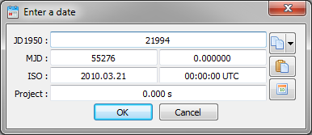

Date formats in VTS¶
Formats list¶
| Date format | Abbreviation | Example: May 17th, 2011, 16h22 | Distance to JD1950 | Leap seconds | Usage in VTS |
|---|---|---|---|---|---|
| CNES Julian day | JD1950 | 22416.6819444444 | 0 | Yes |
|
| Modified julian day | MJD | 55698 58920.000000 | 33282 | Yes |
|
| Calendar date | ISO | 2011.05.17 16:22:00 | NA | Yes | Display |
| ISO 8601 date (forced UTC) | ISO | 2011-05-17T16:22:00.000Z | NA | Yes | Project file |
| Celestia Julian day | jjCEL | 2455699.181944 | 2433282.5 | No | Celestia data files |
| Project-relative date | relative | with project start: May 15th, 2011, 12h39 186180.000 s | variable | Yes | Display |
The internal date representation in VTS uses the reference date of JD1950, and is expressed with two fields for days and seconds (like MJD).
VTS uses the time system UTC both for display and internal calculations.
Entering a date¶
When a date needs to be specified anywhere in VTS, the same user interface is used. The date can be entered in the JD1950, MJD and ISO formats.

Date dialog in VTS
The dialog also contains 3 buttons :
- The first button allows to copy the date in the clipboard with a specific format.
- The second button pastes a date from the clipboard.
- The third button sets the date to the current date.